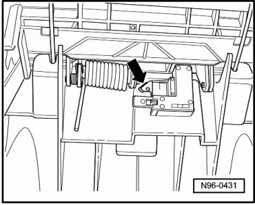

Storage Compartment Lighting Switch
Center Console Lamps and Switches
Storage Compartment Lighting Switch
Storage Compartment Illumination Switch (F335) is located in center console behind rear air vents.
Removing
- Switch off ignition, switch off all electrical consumers and remove ignition key.
- Remove rear air vents in center console.
- Release the connector and disconnect it.
- Disengage retaining tab - arrow - and remove Storage Compartment Illumination Switch (F335).

Installing
Install in reverse order of removal.